Gabelstapler dürfen nur bestimmungsgemäß unter Beachtung der Betriebsanweisung benutzt werden.
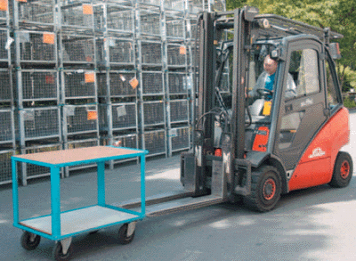
Hinweise zur bestimmungsgemäßen Verwendung siehe Bild 6-2.
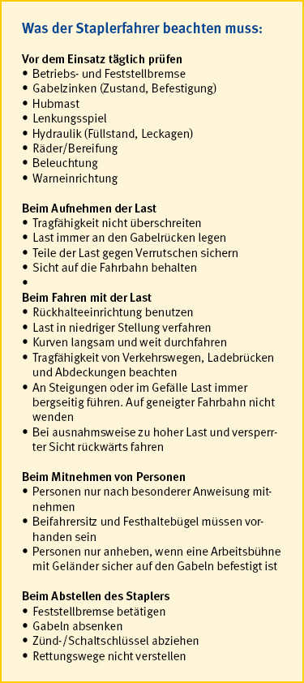
Betriebliche Verkehrsregelungen sollten in Anlehnung an die Straßenverkehrsordnung erfolgen, z. B. durch:
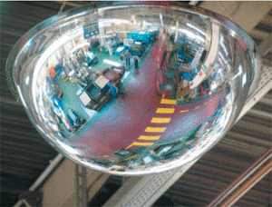
Nur die Verkehrswege, die der Unternehmer für den Gabelstaplerverkehr freigegeben hat, dürfen befahren werden. Manchmal ist es auch einfacher, die Bereiche festzulegen, die nicht befahren werden dürfen.
Zur Verkehrsregelung werden sowohl die Zeichen der Straßenverkehrsordnung als auch betriebliche Beschilderungen benutzt.
Besondere Bedeutung kommt der Kennzeichnung der Tragfähigkeit der Verkehrswege, der Höhe der Durchfahrten und der Breite der Verkehrswege zu. Um gewachsene Böden, Decken, Aufzüge, Überladebrücken und -rampen sicher befahren zu können, muss die Tragfähigkeit des Untergrundes größer sein als das Gesamtgewicht des Gabelstaplers.
Die lichte Höhe der Verkehrswege kann durch abgehängte Rohrleitungssysteme, Lüftungskanäle oder durch halb geöffnete Rolltore eingeengt sein.
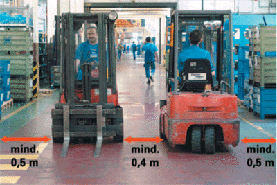
Verkehrswege für Gabelstapler müssen so breit sein, dass auf beiden Seiten des Gabelstaplers bzw. des Ladegutes zur Grenze des Verkehrsweges ein Sicherheitsabstand von mindestens 0,5 m vorhanden ist (Bild 6-4).
Bei starkem Gehverkehr kann eine Vergrößerung des Sicherheitsabstandes auf 0,75 m erforderlich sein.
Wenn ausnahmsweise eine breitere Last zu transportieren ist, muss dieser Sondereinsatz vom Aufsichtführenden genehmigt sein. Neben Absperrungen und kurzfristigen Arbeitspausen im jeweiligen Transportbereich ist ein Einweiser abzustellen. Darüber hinaus darf ein solcher Transport nur im Schritttempo durchgeführt werden.
Verkehrswege dürfen durch Transportgut, leere Paletten oder Abstellen der Gabelstapler selbst nicht verstellt werden.
Der Gabelstaplerfahrer beachtet dies stets, damit er und andere die Verkehrswege sicher benutzen können.
In der theoretischen Ausbildung des Staplerfahrers wird die Standsicherheit des Gabelstaplers ausführlich erklärt. Bei diesem schwierigen Thema spielen der Schwerpunkt der Last und der Schwerpunkt des Gabelstaplers eine besondere Rolle.
Der Schwerpunkt eines Körpers ist der Punkt, in dem man sich die gesamte Masse eines Körpers vereinigt denkt. Wenn dieser Punkt allein unterstützt wird, bleibt er in der Waage.
Wenn eine Last aus einheitlichem Material besteht und symmetrisch gestaltet ist, liegt ihr Schwerpunkt genau im Mittelpunkt (Bild 6-5).
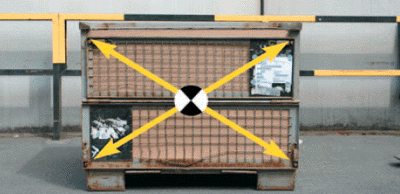
Als Faustformel gilt:
Bei unregelmäßig gestalteten Maschinenteilen und auch bei einseitig gepackten Behältern ist es schwierig, den Schwerpunkt festzustellen. In diesen Fällen sollte die Schwerpunktlage angegeben sein.
Der Gabelstapler ist so konstruiert, dass der Schwerpunkt seines Leergewichtes möglichst weit von der Vorderachse entfernt liegt, in der Regel unter dem Fahrersitz.
Die Lastverhältnisse am Gabelstapler können am einfachsten anhand einer Wippe erklärt werden: Die Wippe ist im Gleichgewicht, wenn auf beiden Seiten der Drehachse Last mal Lastarm gleich groß sind. Wenn der Lastarm auf einer Seite vergrößert wird, muss die Last auf dieser Seite verkleinert werden, um den Gleichgewichtszustand beizubehalten (Bilder 6-6 und 6-7).
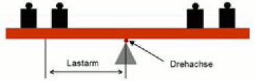
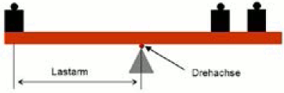
Die Drehachse des Gabelstaplers ist die Achse der Vorderräder. An ihr wirken einerseits der Schwerpunkt des Gabelstaplers mit seinem Abstand und andererseits der Schwerpunkt der Last mit seinem Abstand (Bild 6-8).
Deshalb muss die Last immer so aufgenommen werden, dass ihr Schwerpunkt so nahe wie möglich am Gabelrücken liegt, damit der Hebelarm des Lastschwerpunktes (Lastarm) klein wird. Auf den Lastarm hat der Fahrer maßgeblichen Einfluss.
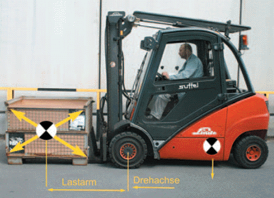
Um den Lastarm möglichst klein zu halten, müssen folgende Grundsätze eingehalten werden:
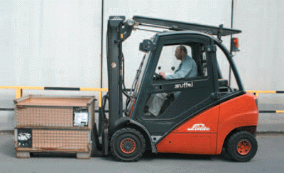
Nach dem Prinzip der Wippe wird die zulässige Last umso kleiner, je weiter sich der Schwerpunkt vom Drehpunkt entfernt. Das Gewicht, das der Gabelstapler bei verschiedenen Abständen der Lastschwerpunkte vom Gabelrücken tragen kann, ist im Lastschwerpunkt-Diagramm angegeben (Bilder 6-10 und 6-11).
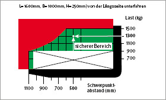
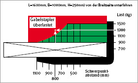
Es genügt also nicht, wenn nur das Lastgewicht berücksichtigt wird, sondern auch die Entfernung des Lastschwerpunktes vom Gabelrücken ist zu beachten:
Auch Zusatzgeräte, wie Seitenschieber oder Pfanne für Flüssigkeitstransport, müssen als Last berücksichtigt werden. Sie vermindern die Nutzlast des Gabelstaplers.
Die Anwendung des abgebildeten Lastschwerpunkt-Diagramms soll an einem Beispiel erläutert werden:
Frage:
Darf der Gabelstapler mit einer Tragfähigkeit
von 1500 kg diese Kiste aufnehmen?
Der Fahrer kann die Kiste von der Längsseite oder von der Breitseite her aufnehmen. Nimmt er die Kiste von der Längsseite, so beträgt der Lastschwerpunktabstand 500 mm. Nimmt er sie von der Breitseite auf, beträgt der Lastschwerpunktabstand 800 mm.
Das Lastschwerpunkt-Diagramm sagt, dass bei einem Lastschwerpunktabstand von 500 mm die Last sicher aufgenommen werden kann. Hingegen kann der Stapler die Last mit einem Lastschwerpunktabstand von 800 mm nicht mehr sicher aufnehmen.
Die Kiste kann also transportiert werden, wenn sie von der Längsseite her aufgenommen wird.
Wenn Güter in Kisten verpackt mit dem Lkw angeliefert werden, müssen vor dem Entladen folgende Fragen beantwortet werden:
Das Gewicht ist in den Transportpapieren zu finden. Die Tragfähigkeit des Gabelstaplers kann dem Fabrikschild entnommen werden. Nur wenn die Schwerpunktlage richtig ermittelt worden ist, kann der Gabelstaplerfahrer die Gabelzinken in die richtige Position bringen. Die Arbeit des Staplerfahrers wird erleichtert, wenn an der Last
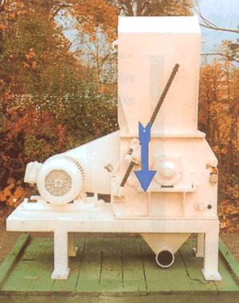
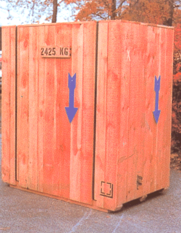
Merkregeln für das Aufnehmen der Last:
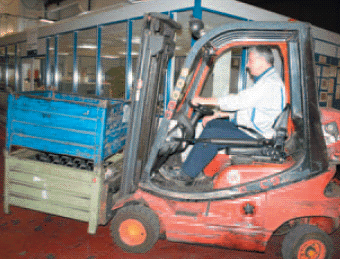
Für das Absetzen der Last gilt:
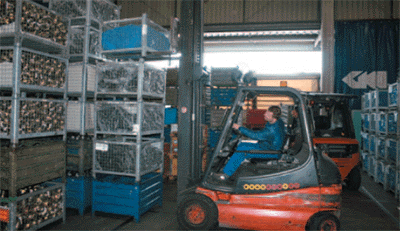
Der Fahrer muss bei allen Fahrbewegungen ausreichende Sicht auf die Fahrbahn haben. Diese Forderung wirft die Frage nach der zulässigen Höhe der Last auf. Die vom Gabelstapler aufgenommene und bodenfrei angehobene Last darf nur so hoch sein, dass der Fahrer seine Fahrbahn über die Last hinweg überblicken kann: Bei Auftauchen eines Hindernisses muss der Gabelstapler rechtzeitig zum Halten gebracht werden.
Große Lasten können die Sicht auf die Fahrbahn nach vorne versperren. Sind solche Transporte in Einzelfällen erforderlich, muss rückwärts gefahren werden, möglichst unter Zuhilfenahme eines Einweisers. Da die Last hierbei nicht beobachtet werden kann, soll mit Lasten, die seitlich über den Gabelstapler hinausragen, nicht rückwärts gefahren werden.
Regelmäßige Beförderung von Lasten, die eine Sicht auf die Fahrbahn nicht zulassen, widerspricht den Sicherheitsanforderungen. In solchen Fällen müssen andere geeignete Transportmittel verwendet werden. Bewährt haben sich beispielsweise:
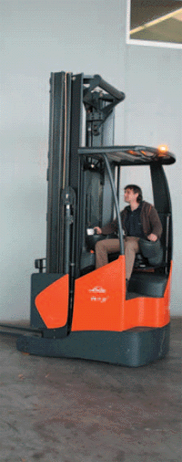
Bei eingeschränkter Sicht auf die Fahrbahn kann eine Sichtverbesserung u. a. auch erreicht werden durch:
Weitere Regeln für ein sicheres Fahren sind:
Gabelstapler mit drehbarer Fahrerkabine - System "Jungheinrich": Für die Rückwärtsfahrt kann die Kabine um 180° gedreht werden. Der Fahrer hat somit immer freie Sicht auf die Fahrbahn (Bild 6-17).
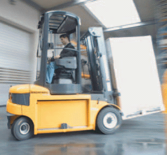
Gabelstapler mit drehbarem Fahrersitz - System "Linde": Für die Rückwärtsfahrt wird der Fahrersitz um 45° nach rechts gedreht. Das Lenkrad ist fest montiert, die Steuerelemente für die Hände bewegen sich mit dem Fahrersitz und die Steuerelemente für die Füße sind doppelt vorhanden.
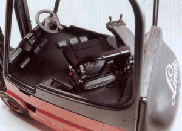
Der Schwerpunkt eines leeren Gabelstaplers liegt weit entfernt von der Vorderachse. Wenn der Stapler eine Last aufgenommen hat, bilden die Schwerpunkte des Gabelstaplers und der Last einen Gesamtschwerpunkt. Dieser Gesamtschwerpunkt liegt näher an der Vorderachse als der Schwerpunkt des Gabelstaplers (Bilder 6-19 bis 6-21).Deshalb ist ein leerer Gabelstapler in Fahrtrichtung standfester als ein beladener.
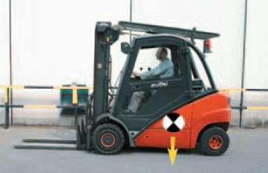
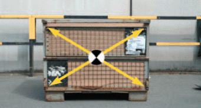
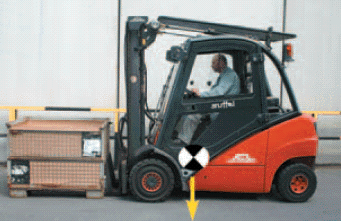
Wenn die Last angehoben wird, verlagert sich nicht nur der Lastschwerpunkt, sondern auch der Gesamtschwerpunkt nach oben (Bild 6-22).
Falls zusätzlich das Hubgerüst aus seiner größten Rücklage nach vorn geneigt wird, verlagert sich der Lastschwerpunkt und folglich auch der Gesamtschwerpunkt noch weiter nach vorne.
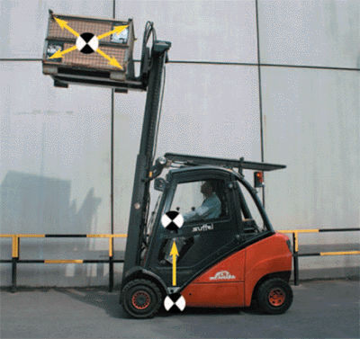
Aus diesen Erkenntnissen ergeben sich für den Fahrer folgende Grundsätze:
Die Forderungen "Last immer bergseitig" und "Rückwärtsfahren, wenn Sicht durch Last versperrt" widersprechen sich beim Befahren einer Steigung. Vorrang hat die erstgenannte Forderung (Bild 6-23).
Die versperrte Sicht des Fahrers ist durch einen Einweiser auszugleichen.
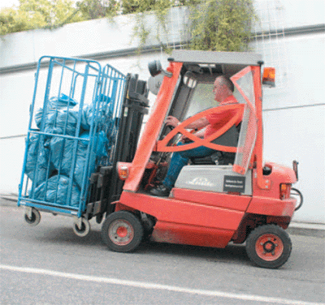
Gefährlicher als das Kippen nach vorne ist das Kippen des Gabelstaplers zur Seite. Gefährlicher deshalb, weil der Fahrer instinktiv versucht, beim Kippen vom Gabelstapler abzuspringen. Meist wählt er die Seite, auf die der Gabelstapler fällt. Dann wird er vom Gabelstapler noch erfasst und schwer oder tödlich verletzt.
Es ist kaum möglich, sich entgegen der Fallrichtung des Gabelstaplers bewegen zu wollen. Aus diesem Grund ist es unbedingt erforderlich, dass der Fahrer die Rückhalteeinrichtungen benutzt. Kippt ein Gabelstapler, ist es die beste und sicherste Art solch einen Umsturz zu überstehen, sich am Lenkrad oder Fahrerschutzdach festzuhalten und den Fahrersitz nicht zu verlassen.
Damit es jedoch nicht zu solch einem Unfall kommt, muss der Fahrer die Ursachen des Kippens kennen und lernen, das Kippen zu vermeiden. Jeder Gabelstapler mit einer Tragfähigkeit bis zu ca. 10 t besitzt ein Kippkanten-Dreieck. Dies gilt unabhängig davon, ob der Stapler drei oder vier Räder hat.
Beim Dreirad-Gabelstapler bilden die drei Räder dieses Dreieck, wobei das hintere Rad gelenkt wird.
Beim Vierrad-Gabelstapler ist die gelenkte Hinterachse pendelnd in der Achsmitte gelagert (Bild 6-24). Der Gabelstapler stützt sich nur in diesem Auflagepunkt der Lenkachse ab. Alle Belastungen der Lenkachse laufen über diesen Punkt. Dieser Auflagepunkt bildet daher beim Vierrad-Gabelstapler die Spitze des Dreieckes.
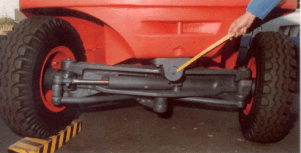
Die Schwerpunkte des leeren und des beladenen Gabelstaplers liegen innerhalb des Dreicks. Es ist deutlich zu erkennen, dass der Schwerpunkt des beladenen Gabelstaplers einen größeren Hebelarm zur Kippkante besitzt als der Schwerpunkt des leeren Gabelstaplers (Bild 6-25).
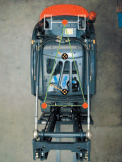
Außerdem ist zu berücksichtigen, dass sich im Schwerpunkt des beladenen Gabelstaplers ein größeres Gewicht vereinigt als im Schwerpunkt des leeren Gabelstaplers.
Die beiden Größen Gewicht und Hebelarm bilden das Sicherheitsmoment. Dieses Sicherheitsmoment des beladenen Gabelstaplers ist größer als das Sicherheitsmoment des leeren Gabelstaplers. Deshalb kippt der beladene Gabelstapler bei Kurvenfahrt nicht so leicht wie der leere Gabelstapler.
Diesem Sicherheitsmoment wirkt das Kippmoment entgegen. Es wird gebildet aus der Fliehkraft und dem Abstand des Schwerpunktes zum Verkehrsweg. Beim beladenen Gabelstapler greift die Fliehkraft im Gesamtschwerpunkt an.
Sie versucht, bei Kurvenfahrt den Gabelstapler nach außen zu drängen, vergleichbar der Fahrt auf einem Kettenkarussell, und zwar um so mehr, je schneller der Gabelstapler fährt und je enger die Kurve ist.
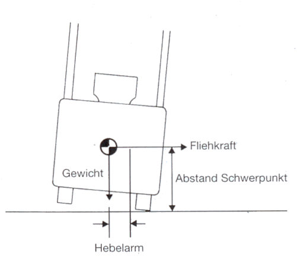
Der Staplerfahrer kann das Sicherheitsmoment während der Fahrt nicht beeinflussen. Die Räder bleiben auf dem Boden, solange das Sicherheitsmoment größer ist als das Kippmoment (Bild 6-26).
Einige Größen kann der Fahrer jedoch beeinflussen, um das Kippmoment klein zu halten.
Zunächst muss die Höhe des Gesamtschwerpunktes so klein wie möglich gehalten werden:
Um das Kippmoment nicht zu hoch anwachsen zu lassen, darf die Fliehkraft nicht zu groß werden:
Nicht ganz so wirksam ist die Veränderung des Kurvenradius:
Um bei Kurvenfahrt die Umsturzgefahr zu vermeiden, müssen folgende Forderungen eingehalten werden:
Unfalluntersuchungen haben ergeben, dass besonders unbeladene Gabelstapler bei zu schneller Kurvenfahrt umgekippt sind.
Ein weiteres gefährliches Fahrmanöver, das zum seitlichen Kippen führen kann, ist das Wenden oder Kurvenfahren auf einer schiefen Ebene. Deshalb: Niemals auf geneigter Fahrbahn wenden!